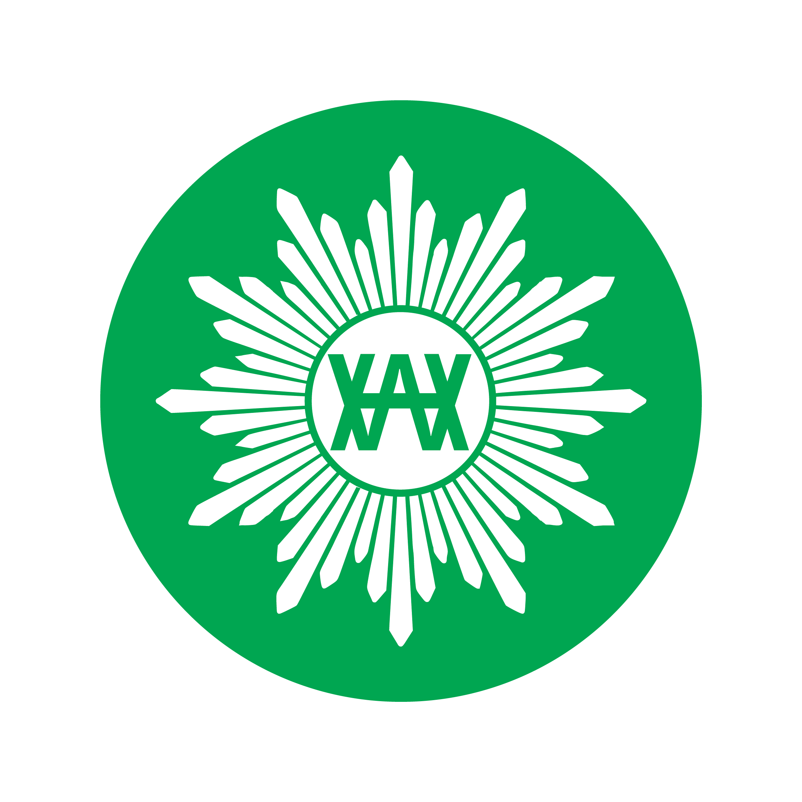

Panel panitia
Pemilihan Ketua Kwarda Hizbul Wathan Kabupaten Bandung
Memuat status…
Suara terbanyak sementara
–
0suara masuk dari 0 pemilih
0pemilih menunggu persetujuan
Rekap pemilih
0Total pendaftar
0Disetujui
0Ditolak
0Sudah memilih
0Belum memilih
0%Partisipasi
Aktivitas terbaru admin & sistem
🔒 Suara bersifat rahasia. Dashboard hanya menampilkan jumlah, tidak pernah siapa memilih siapa.
Status pemilihan -
Jika waktu mulai/selesai diisi, pemungutan suara otomatis mengikuti jadwal tersebut.